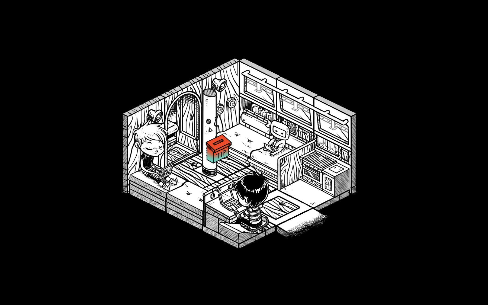
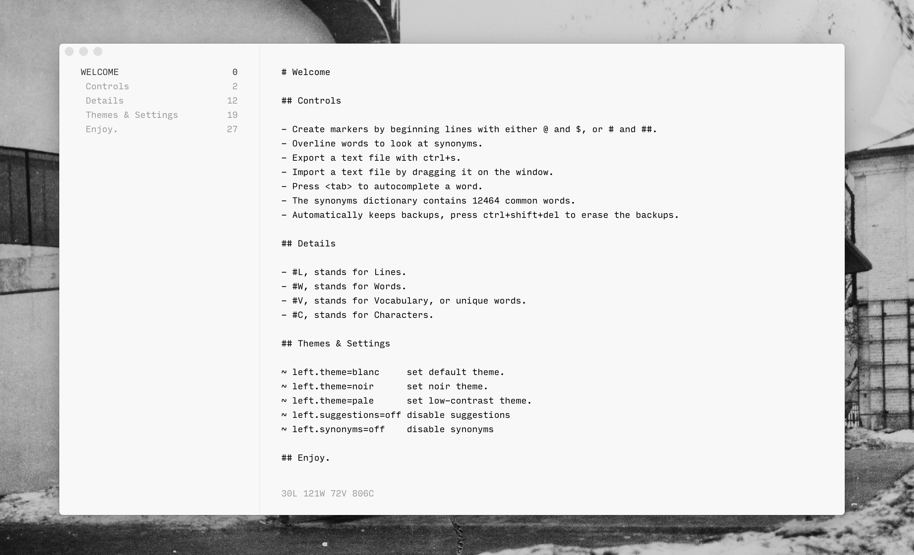
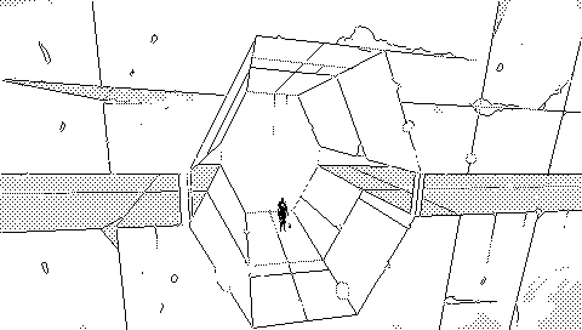
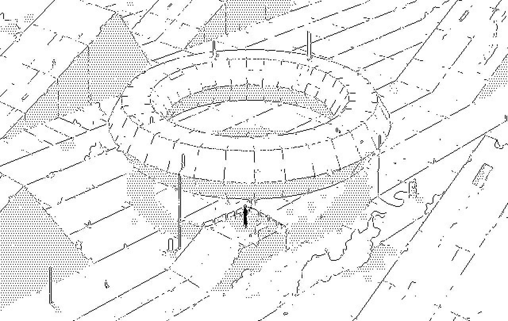

Quant ad Aliceffekt, nomin Ver'Tale in aliquot titul indic que carmin es part de un diurnal recuper et pot ne sequ in mod exact lini de tempor de album.

Ver'Tale es region equatorial boreal de Dinaisth.
Un anomal de gravitat fac structur sin pond per un tempor, cum orbit de Aitasla es paralel cum equator de Dinaisth. Combinat de trah oscil infra et vent de forc de procell e cre un teren mult dificil ad navig. Insuls Ver'tale, aliquand script Ver'Tale, es plen de detrit ex machin de cunicul qui olim oper in Es.
A gravitational anomaly makes structures temporarily weightless when Aitasla's orbit is parallel with the equator of Dinaisth. The combination of the oscillating downward pull and gale-force winds have created a terrain very hard to navigate. The Ver'tale islands, sometimes written Ver'Tale, are filled with the debris from the tunneling machines that once operated in Es.
As far as Aliceffekt is concerned, the Ver'Tale name in some title indicates that the track is part of a recovered diary and may not exactly follow the album's timeline.




incoming: known magye ver iytsl opal inquisitors